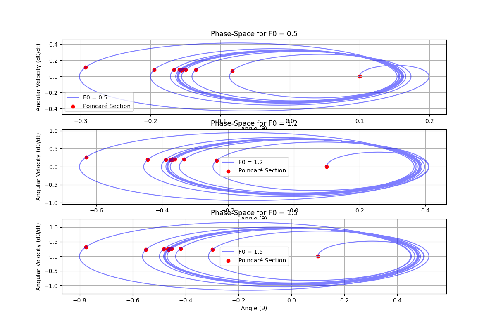

Problem 2
A pendulum is a weight suspended from a fixed point that swings back and forth under the influence of gravity. It is commonly used in clocks, physics experiments, and engineering applications.
Types of Pendulums
- Simple Pendulum: A mass (bob) attached to a string or rod with negligible mass.
- Compound Pendulum: A rigid body swinging about a fixed point.
- Foucault Pendulum: Demonstrates Earth's rotation.
- Forced & Damped Pendulum: Includes external forces and resistance.
Forced Damped Pendulum: Small-Angle Approximation
The forced damped pendulum is governed by the following second-order differential equation:
Where:
- \( \theta(t) \) is the angular displacement,
- \( \beta \) is the damping coefficient,
- \( \omega_0 \) is the natural frequency of the pendulum (for small angles),
- \( F_0 \) is the amplitude of the driving force,
- \( \omega \) is the driving frequency,
- \( \sin(\theta) \approx \theta \) for small angles.
Small-Angle Approximation
For small angles (\( \theta \approx 0 \)), \( \sin(\theta) \approx \theta \), so the equation simplifies to:
This is a standard forced damped harmonic oscillator equation.
Solution to the Differential Equation
The solution consists of two parts:
- Homogeneous Solution (Undriven): The general solution to the homogeneous equation \( \frac{d^2\theta}{dt^2} + 2\beta \frac{d\theta}{dt} + \omega_0^2 \theta = 0 \) is:
Where \( \omega_d = \sqrt{\omega_0^2 - \beta^2} \) is the damped frequency.
- Particular Solution (Driven): The particular solution to the non-homogeneous equation \( \frac{d^2\theta}{dt^2} + 2\beta \frac{d\theta}{dt} + \omega_0^2 \theta = F_0 \cos(\omega t) \) is:
Thus, the total solution is the sum of both:
Resonance Conditions
Resonance occurs when the driving frequency \( \omega \) matches the natural frequency \( \omega_0 \) of the system, i.e., \( \omega = \omega_0 \). At resonance, the system experiences maximum amplitude oscillations, which can lead to large oscillations and potential system failure due to energy buildup.
Energy Implications
- Non-Resonant Case: When \( \omega \neq \omega_0 \), the system oscillates with an amplitude determined by the balance between the driving force and damping.
- Resonance: At resonance, the energy transfer from the driving force to the pendulum is maximized, leading to a significant increase in amplitude. If damping is small, the system can oscillate with large amplitude for long durations, which can result in high energy accumulation.
The transition between regular and chaotic motion and their physical interpretations.
